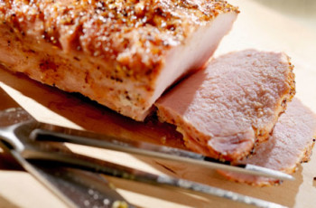

Brazilian Churrasco

Description
Top sirloin steak done the Brazilian way, giving you nothing but the true flavor of the meat.
Nunca vi ninguém comendo churrasco de lombo por aqui, mas blz...
Original recipe
Ingredients:
- 1 (12 ounce) 1/2-inch thick top sirloin steak
- 2 cups heavy creamsea salt (such as LEBRE/CISNE®) to taste
Steps:
- Rub sirloin steak with sea salt, pressing until salt sticks on both sides and steak is evenly coated.
- Preheat churrasqueira with coal for medium heat and lightly oil the grate.
- Cook steak on the preheated churrasqueira until browned, about 5 minutes.
Flip steak; scrape as much salt off the top as possible. Continue cooking until second side is browned
and center reaches desired doneness, 5 to 10 minutes more. Scrape salt off the second side and serve.